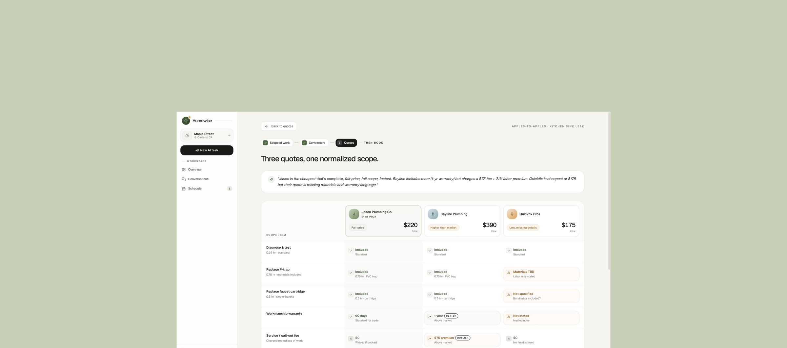
Case study · 2026
AI command center for homeowners. It defines the scope, compares contractor quotes apples to apples, and pauses for your approval before anything happens.
The bet
Hiring a contractor is one of the most stressful purchases a homeowner makes, and the market says the fear is earned. Homewise bets an agent can run the hire end to end, from problem to booked job. So the question that decides product-market fit is not whether the automation works. It is whether people will trust it.
worry about hiring an unreliable contractor.
have been deceived by a service provider.
delay repairs to avoid the stress of finding someone.
Leaf Home / Morning Consult, 2025. HomeServe, 2025.
Overview · My role
Homewise turns a plain language problem into a defined scope of work, sends that one scope to every vetted contractor, and brings the bids back on identical terms. As lead product designer on a 13 person team, I owned:
Eight interviews synthesized into six findings, including the reframe that set the direction.
Built as living code, with a drift linter that caught drift before it shipped.
Merged the other two designers' pull requests so every contribution extended Hearth.
The full agent flow in Claude Code, handed to the dev team as the repo. No Figma in between.
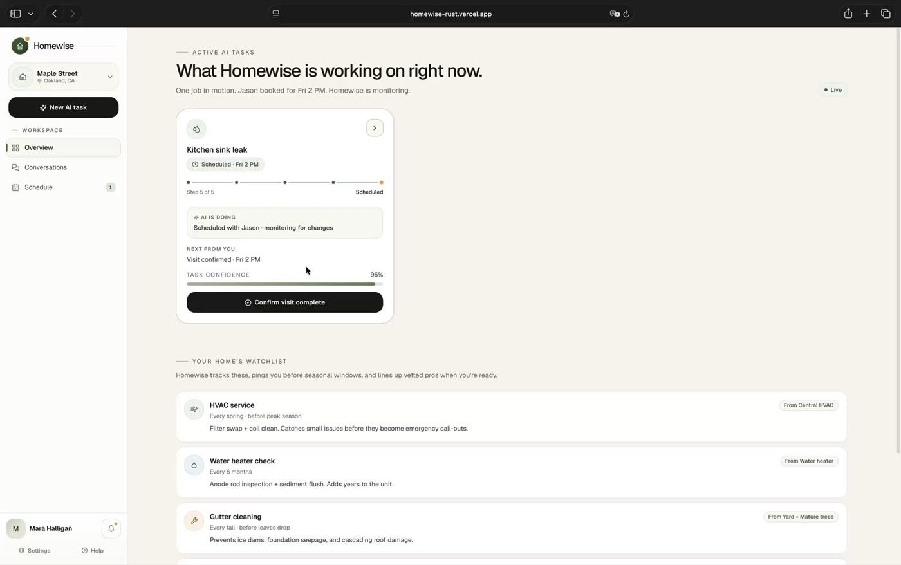
Evidence · Eight interviews
Trust starts social. People ask a neighbor or a friend first, because they assume online ratings can be gamed. When word of mouth runs out, they fall back on marketplaces they trust even less. Then the grind begins. Three frustrations surfaced in almost every interview.
"Finding the right person is the hardest part."
"You can't really know if the price is fair."
"I had to make so many phone calls just to compare prices."
Insight
When contractors propose different fixes for the same issue, their quotes describe different work, so there is nothing to compare. One homeowner was quoted $250 to $7,000 for the same siding repair, and the telling part is that he had already worked out the answer. He described Homewise before we built it.
Same siding repair · 5 contractors quoted
Why this is hard
Three constraints shaped every call that follows.
Homeowners rarely know how to describe a repair, and they have no reason to trust the numbers that come back.
Trust is only credible on real license, insurance, and permit records. A model's best guess is not verification.
A single change ripples through scope, matching, quotes, and tracking. No screen can be designed in isolation.
Design statement
Homewise acts on the reframe: scope first, price second. Fix the scope, and the price becomes legible. Three principles follow, one for each constraint.
A chatbot would leave people guessing at scope and price both. The workflow walks them through it instead.
Matching and flags run on license, insurance, and permit records, so every trust signal is a checkable fact.
The agent recommends. Nothing is booked until you approve. Human in the loop, never an autopilot default.
Solution · The workflow
A short intake conversation and a photo become a structured, editable scope of work, so you never have to know the right words.
It finds and vets contractors, surfacing verified pros and the ones other Homewisers recommend.
One scope means comparable bids. Outliers and gaps get flagged, and you approve the right contractor.
The job stays in one place from booking to done, with every status change visible as it happens.
Process
Engineering used to be the slow part, so design got front-loaded and the build came last. Now the team can stand up a working version faster than I can finish a static mock. Each loop starts from the PM's PRD, our shared intent, and the prototype exposes gaps the document cannot.
Less time on mockups, more time on the calls only a person can make. I took this from Jenny Wen, Head of Design for Claude, who argues the design process is dead.
Final design · 1 of 5
You describe the problem in your own words. The agent drafts the scope, editable before it goes out, so every contractor quotes the exact same job and you never repeat yourself on the phone.
The tradeoff
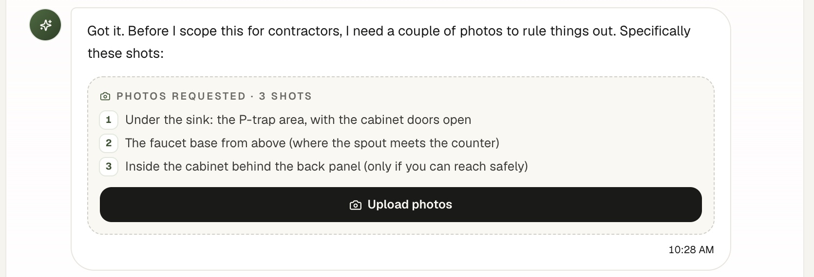
The first intake could not say no. It asked for three shots, one click flipped to "Photos uploaded", and the conversation moved on with no photo ever checked. Nothing pushed back, and it felt fake.
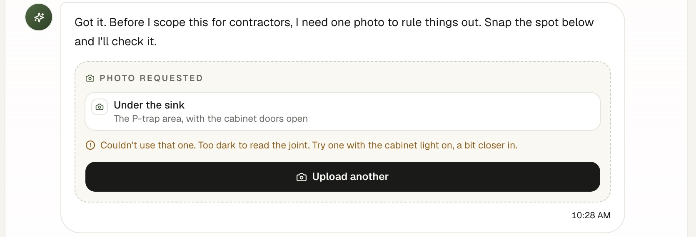
The shipped chat is built to check the photo in front of you: a shot the agent cannot read gets rejected with advice for the retake, and the conversation moves only once it has what it needs. An agent that can say no is one you can believe.
Final design · 2 of 5
The same scope goes out to every contractor, so you stop repeating yourself on the phone and everyone quotes the exact same job.
The tradeoff
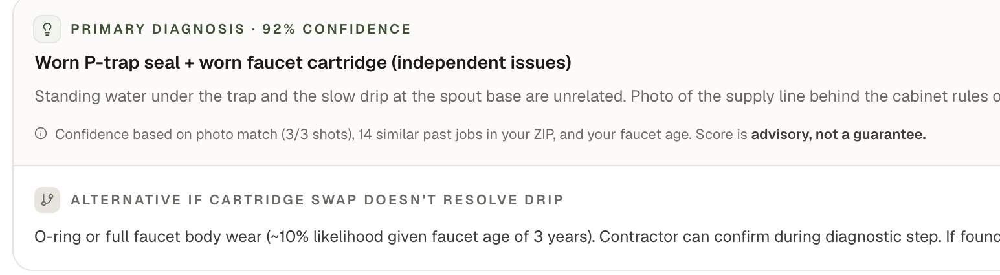
The scope's diagnosis led with "92% confidence". Three of four testers asked what the number was based on, and every attempt to explain it, a one line source, then a step by step trail, just added chrome.
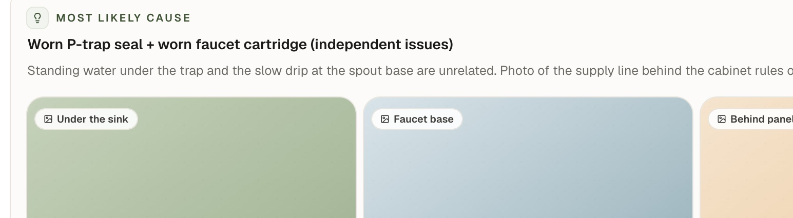
The score became "Most likely cause", and the diagnosis with a local price benchmark does the trust work the number was not doing. A claim that can explain itself beats one that only sounds precise.
Final design · 3 of 5
A verified match arrives with its reasoning: why it was picked, and how many Homewisers recommend them.
The tradeoff
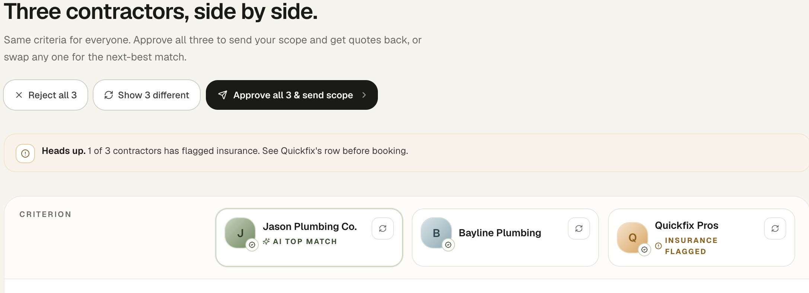
The actions sat at the top of the page: reject all three, show three different, approve and send. It asked for a commitment before you had read a single row, and the swap icon on every column was decorative, wired to nothing.
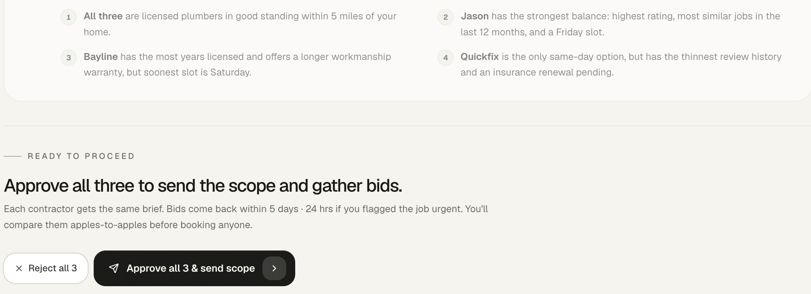
Approve moved below the evidence into a "Ready to proceed" dock, so the decision comes after the read. Any column swaps for its next best match in one click, and an urgent job pulls bids back in 24 hours instead of five days.
Final design · 4 of 5
Bids line up side by side with a plain language summary and outlier flags, and approving the hire is one deliberate click.
The tradeoff
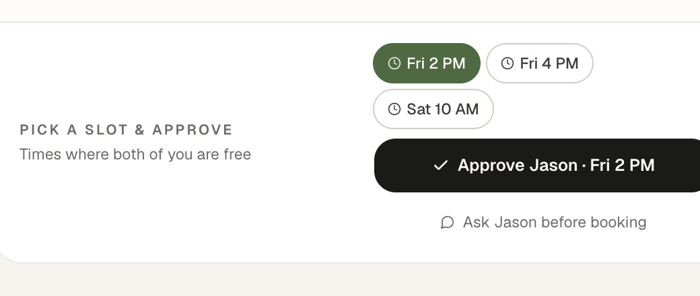
The first version topped the matrix with a "3 deviations flagged" headline and tucked contact under Approve as a small ghost link. The count didn't match the matrix, and four of four testers wanted the call first.
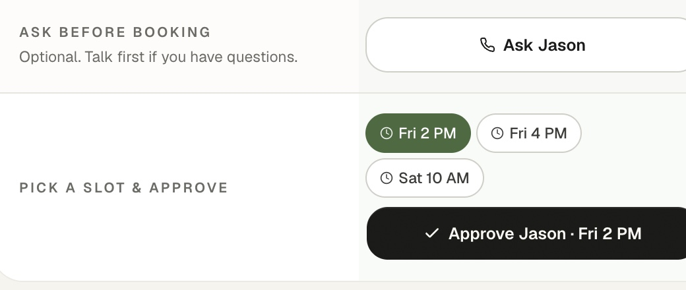
The count is gone, flags live in the cells they describe, and the summary names them: the $75 fee, the missing warranty language. "Ask before booking" became a full button above Approve, so the page reads ask first, then approve.
Final design · 5 of 5
Once a contractor is booked, the whole job lives on one dashboard. It tracks itself from scheduled to closed out, so it never slips back into scattered calls and texts.
The tradeoff
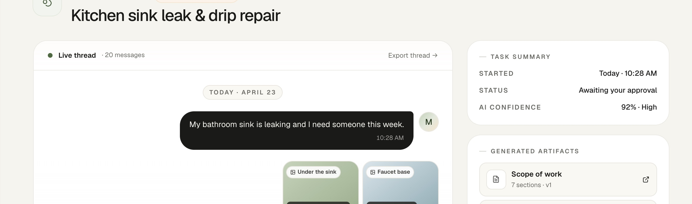
The job's thread did not know when the job ended. With the work complete it still read "Live thread", the status still said awaiting your approval, and the suggested next step was still to approve Jason. The story stopped mid sentence.
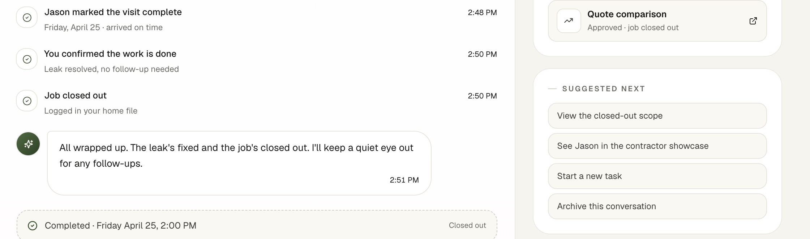
The thread is where you track the job. The agent narrates each step as it happens, booking confirmed, visit complete, work confirmed, and files what it produces as cards. When the work ends the ending is written in, and the thread flips to Completed.
Outcome
Homewise is live and interactive. The whole flow runs end to end, from the first plain language request to the moment you approve the hire. It is the artifact I handed the dev team, and the product they shipped was built straight onto it.
Design system
The palette is read by role, not hue: sage for trust, ember for caution, sky for info, over a warm cream canvas and near black ink. Shadows are banned, so depth comes from a five tier surface ladder and hairlines instead. It is living code, and every new token ships behind a drift linter.
Collaboration
We designed in the codebase from day one, a real React prototype on Hearth, then handed the dev team the repo itself. I built the front end and the data structures, the engineers wired live data and the backend onto them. Here is the shipped build, start to finish. Press play.
Reflection
People only let the agent run when they could see the scope it built, the contractors it verified, and knew the final yes was still theirs. That is the answer to the opening bet: trust is not a promise, it is something the interface earns screen by screen.
Building a front end prototype in Claude Code for the first time reframed the deliverable too.
The design wasn't a picture of the product. It was the first version of it.
Thank you